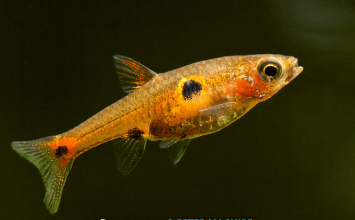
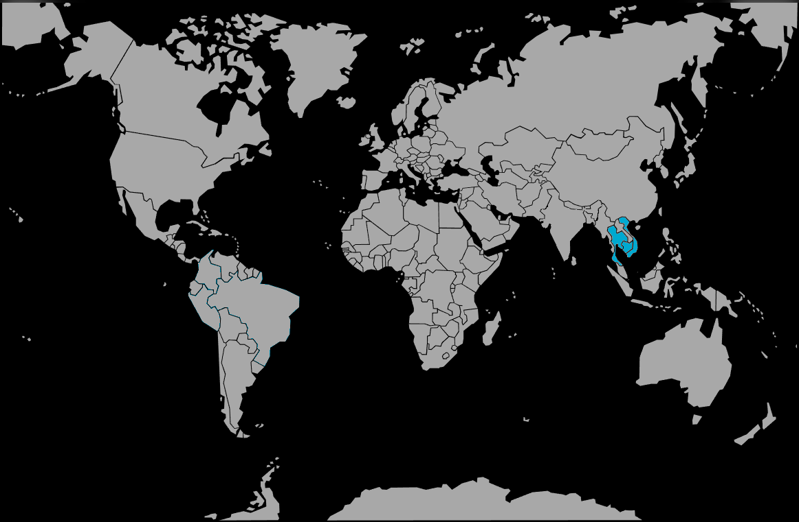

Systématique
- Ordre : Cypriniformes
- Famille : Danionidae
- Genre : Boraras
- Espèce : B. naevus

Boraras naevus, connu dans le commerce sous le nom de "Rasbora fraise" (Strawberry Rasbora), est une espèce miniature décrite récemment en 2011 par Conway et Kottelat.
Il mesure à peine 1,5 à 2,0 cm à l'âge adulte. Son nom d'espèce naevus (signifiant "tache" ou "grain de beauté" en latin) fait référence à la grosse tache noire située sur le flanc, nettement plus large que chez Boraras maculatus ou Boraras merah.
Les mâles arborent une coloration rouge très intense, parfois plus profonde que celle des autres espèces du genre, ce qui en fait un poisson très recherché pour les aquariums plantés de petit volume (nano-aquascaping).
C'est un poisson grégaire qui doit vivre en banc d'au moins 10 individus. Il est extrêmement paisible mais timide.
Il nage en pleine eau, souvent en groupe serré, surtout s'il se sent menacé. Il convient parfaitement à la cohabitation avec des crevettes naines (Neocaridina), car il ne représente aucun danger pour elles. Il a besoin d'un bac bien planté avec des zones d'ombre pour révéler ses plus belles couleurs.
Mode : ovipare (diffuseur d'œufs).
La reproduction est similaire aux autres Boraras. Les mâles dominants défendent de minuscules territoires temporaires et attirent les femelles pour pondre parmi les plantes fines.
Il n'y a pas de soin parental. Pour réussir l'élevage, il faut isoler un couple ou un petit groupe dans un bac spécifique avec de l'eau très douce et acide, et beaucoup de mousse de Java. Les alevins nécessitent une nourriture microscopique (infusoires) dès la nage libre.
Dimorphisme sexuel : Le mâle est plus petit, plus svelte et surtout beaucoup plus rouge que la femelle. La femelle est plus grande, avec un ventre rebondi, et sa couleur tire davantage sur l'orange pâle ou le rose, avec une tache latérale noire souvent moins marquée.
Espérance de vie : 3 à 5 ans dans de bonnes conditions.
Il est endémique du sud de la Thaïlande (péninsule malaise), plus précisément dans la province de Surat Thani.
Il vit dans les marais, les rizières et les fossés peu profonds riches en végétation aquatique et submergée. L'eau y est généralement claire ou légèrement teintée, douce et acide, mais il semble tolérer une gamme de paramètres un peu plus large que B. brigittae.
Répartition

Origine naturelle :
- Asie du Sud-Est.
- Thaïlande (Sud, Péninsule malaise).
- Province de Surat Thani.
Paramètres de maintenance
Température : 24 à 28 °C.
pH : 5,0 à 7,0 (préfère l'acidité).
GH : 2 à 12 °dGH.
Volume conseillé : Minimum 20 à 30 L. Idéal pour les nano-aquariums de 30L (cube ou rectangulaire) densément plantés.
Régime alimentaire
Régime : carnivore / insectivore (micro-prédateur).
Dans la nature, il se nourrit de micro-organismes.
En aquarium, il accepte les nourritures sèches si elles sont réduites en poudre très fine. Il raffole des nauplies d'artémias vivantes, qui stimulent sa coloration rouge.